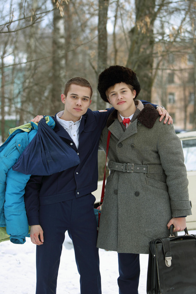

50 самых интересных фактов о сериале
«Слово пацана. Кровь на асфальте»
факт номер 1
Один из самых нашумевших сериалов года вот уже чуть больше месяца не дает покоя никому:
одних он поразил, других — задел, но так или иначе равнодушных зрителей
практически не осталось. Над сценарием детища Жора Крыжовников работал 24 месяца,
а кастинг занял около года. Именно поэтому у проекта было предостаточно времени,
чтобы обзавестись интересными историями.

Первоначально съемки сериала планировалось проводить в Казани В городе даже открыли кастинг,
однако он довольно быстро свернулся. Оказывается, местные общественники воспротивились
созданию истории о тяжелых казанских временах. Они подали иски в ГК с требованием
заблокировать показ картины. Долго ответа ждать не пришлось. Дело в том,
что власти Татарстана тоже посчитали «казанский феномен» настоящим позором для региона,
а потому запретили снимать художественную хронику жестоких столкновений подростковых группировок на их территории. Таким образом,
перед создателями сериала встала новая задача: найти локации,
которые идеально смогли бы передать атмосферу Казани тех лет. После продолжительных поисков, выбор пал на Ярославль, где были похожие улицы,
дворы и здания. Главными местами стали Ленинский
и Дзержинский районы города, а в некоторых сценах можно увидеть
и центр Ярославля, Волжскую набережную, Октябрьский мост.
